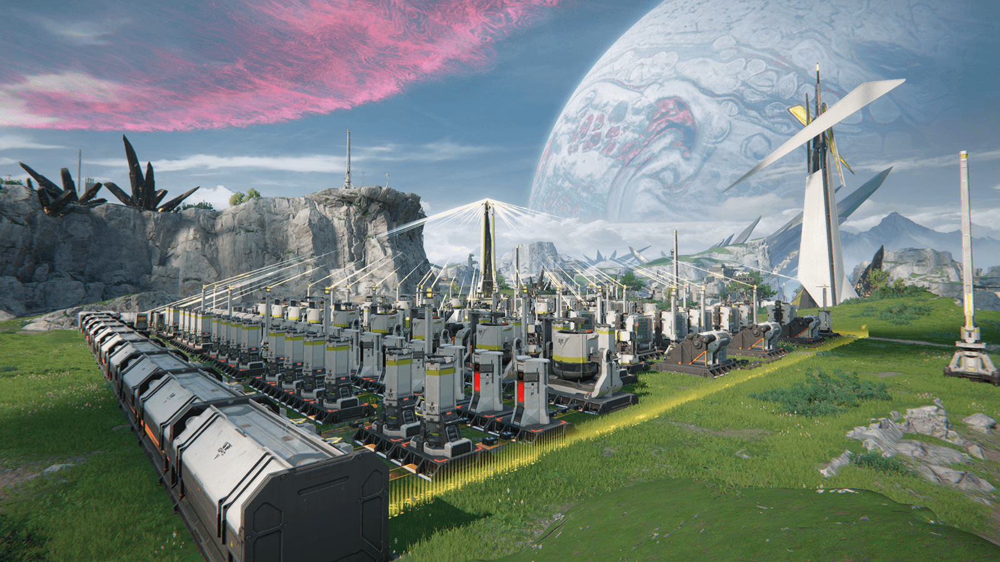

// ARKNIGHTS: ENDFIELD / REFERENCE STUDY
[ REC ] Si / 01
[ 祀 ]
- 阵营
- 宏山科学院
- 种族
- 未公开
白色资料面，黑色记录骨架。亮黄标记把行动与状态从信息中提取出来。
中国大陆官网 · 2026-10-09
单角色档案与工业模块研究
02 / INTEGRATED INDUSTRY
把工业系统
放进明亮页面。
留白负责可读性，编号和书脊负责秩序。世界图像保持原色，系统信息保持黑白。

官网用图像、竖向类别条和编号说明组织集成工业知识；本地保留这一构成，图像为官网静态素材。
竖向 AIC 书脊固定媒体所属类别，让横向图像与资料说明成为一个完整模块。
03 / SOURCE & SCOPE
三种“方舟感”，分别看来源。
原版明日方舟官网用黑灰、青色和全屏档案；终末地官网的干员与工业分区用白底、亮黄和标定细节；莱茵生命的米白研究终端来自官方特别映像。
本地是两个公开模块的教学研究：全图/细节、构成说明切换为本库新增操作；完整35人目录、声音、视频和账户由原站承接。官方素材权利归原权利人。
查看复现边界